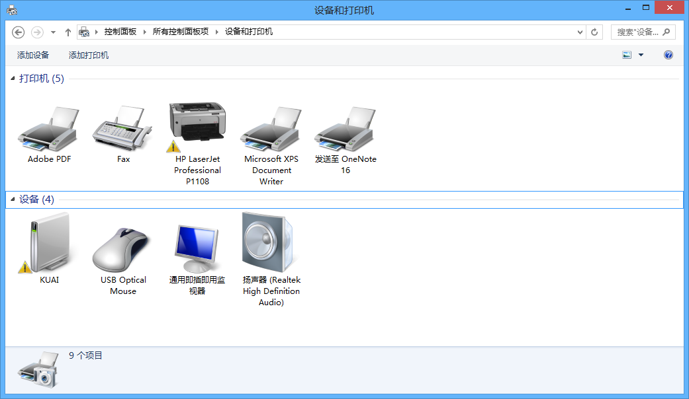
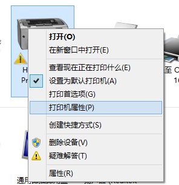
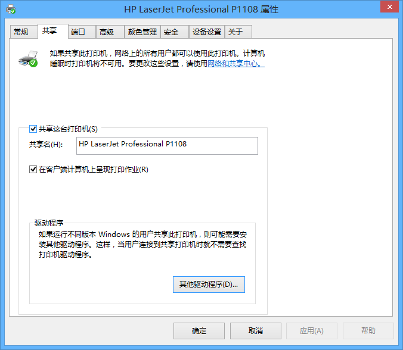
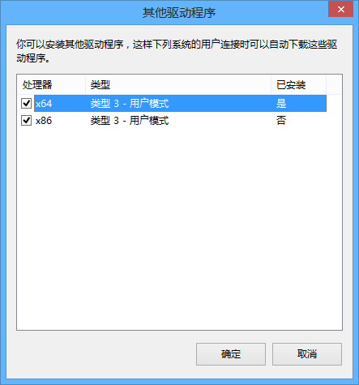
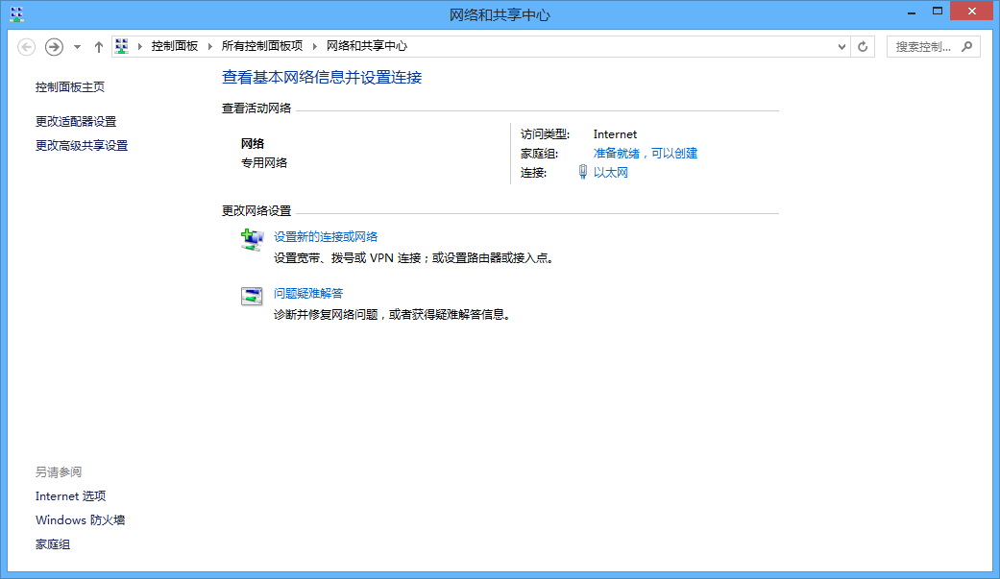
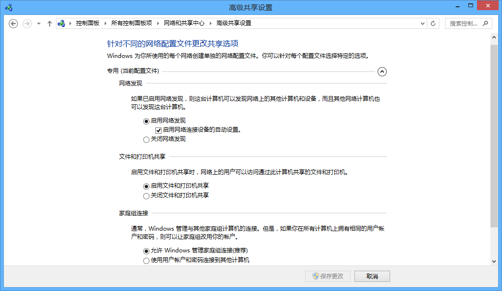
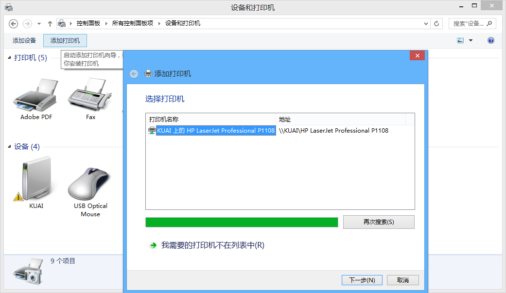

硬件
外接屏幕接线（VGA/HDMI）

注意
颜色仅限本图，虽然VGA线大部分都是蓝头，但是不排除例外情况，主要观察形状和针头数
- 电脑包里有HDMI-VGA转接头
- 双HDMI长线很少，好像就艺体楼有一根
- VGA长线应该蛮多，如果需要可以用一跟VGA长线两头转
VGA转接器（切换器）
- 教室电脑下面or后面蓝盒子
- 有灯指示显示方向，按按钮切换显示方向，如果电脑开着但是没有显示，可以切换一波
- 两个屏幕：小显示器，后面大屏幕（可触屏）
- 有的教室在后面（把讲台后面两扇门掰开（注意先打开插销，有个按钮按一下））
- 如果发现一个屏幕有一个没有的话注意看看是不是插反了
- 注意：该转换器要通电的，没亮灯先检查电是否插好，再看看是不是灯有问题
外接音频线没有声音
- 以下内容应在彩排时解决
- 调整音量，听有没有登的测试音
- W10在音量界面上面有个下拉框，选择外放设备
- W⅞右键音量-播放设备-设置默认设备
- （不确定就每个都试一下）
抢答器使用指南
- 详见《抢答器使用指南.docx》
- 不需要全部记住，在需要使用抢答器的时候，记得有这东西就行
笔记本电脑一般位置
- 小萌办公室信息楼202
外接屏幕分辨率不正确/黑边等
- 尝试更改显示器的分辨率到合适的比例，但是需要注意的是，需要注意显示器的最大分辨率限制
- 以上尝试无效可能是投影仪偏误，或输出设备限制
双面打印
自动双面打印
- 真·自动双面打印
手动双面打印
- 翻转长边：左右翻页（装订线在长边）
- 翻转短边：上下翻页（装订线在短边）
- 如果不确定，可以先印一张出来看看
打印机共享
用途
- 用于局域网内不同机器共享打印机
重点
- 先需下载好对应打印机的驱动程序
- 需要x86，x64驱动都安装
- 需要设置允许进行网络发现
- 准备：主机连接好打印机，安装好打印机驱动，测试打印机可用，确保几台电脑在同一局域网之中
- 推荐在主机同时安装好x86和x64的打印机驱动（其他机器会从主机获取驱动）
- 开始操作，主机打开设备和打印机，右键打印机，打印机属性  
- 勾选共享这台打印机 
- 点击其他驱动程序，将x86，x64均勾选，并按照后续提示进行安装驱动 
- 主机和客机均要进行该设置：打开网络和共享中心，点击更改高级共享设置，选择启动网络发现，启动文件和打印机共享，允许账户连接  
- 客机打开设备和打印机，点击添加打印机，按后续提示进行操作 
硬件和静电
- 在触摸电子设备（如电脑主板、CPU等）的时候，需要注意一下静电，可在电子器件下方隔离地面（不能使其接地），可以垫上本身装他们的防静电袋或纸盒子，避免手上静电损坏电子元件